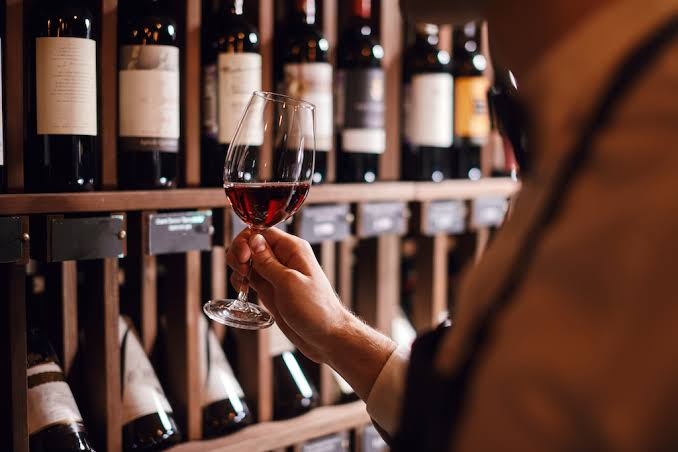

Quem nós somos?
A Vinheria Agnello nasceu como uma loja física em São Paulo e, ao longo de mais de 15 anos, construiu sua reputação em cima de um único princípio: vinho se recomenda com conhecimento e cuidado, não só com prateleira cheia.
Hoje somos dirigidos por Giulio e sua filha Bianca, ao lado de uma equipe que respira vinho todos os dias.
A nossa vinheria adota cuidados especiais no armazenamento de vinhos, em especial com os vinhos de maior valor e vinhos raros, buscando assim garantir para clientes mais exigentes a qualidade original de cada garrafa.
Cada vendedor da nossa loja é treinado para orientar sobre uvas, regiões, rótulos e harmonizações. É com essa mesma experiência que queremos trazer para você aqui no site!
